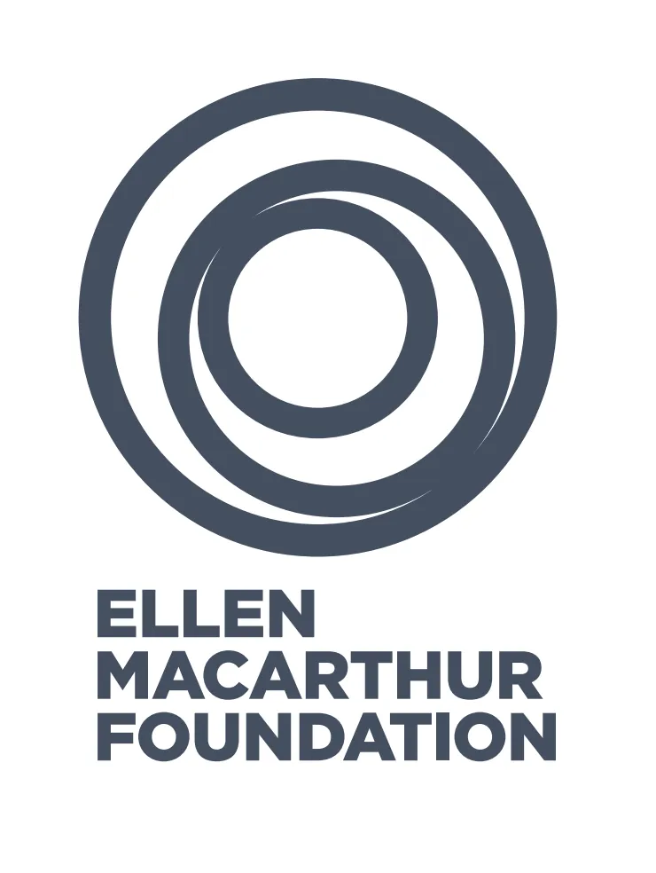
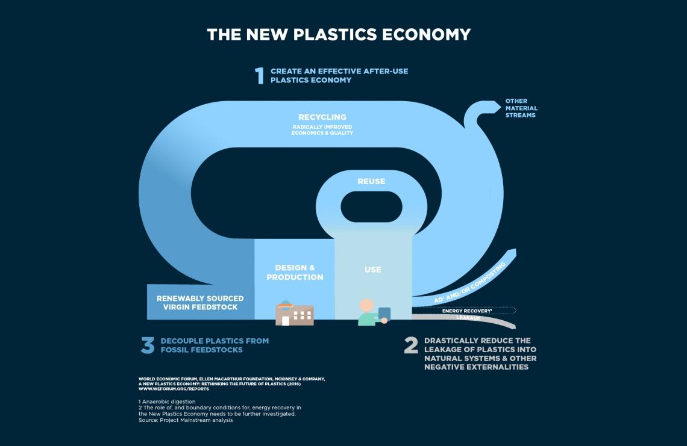

La Ellen MacArthur Foundation, fondata nel 2010 da Ellen MacArthur, è l'organizzazione
a livello internazionale, punto di riferimento su temi quali la sostenibilità e l'economia circolare.
Con sede principale in Inghilterra, opera oggi con importanti brand o organizzazioni per accellerare
la transizione verso un'economia più verde e circolare, tramite la realizzazione di partnership e
l'organizzazione di iniziative volte a sensibilizzare la comunità su questi temi.
La fondazione è riuscita a costruirsi un’importanza a livello internazionale che le ha permesso di rimanere,
nel corso degli anni, il punto di riferimento nei settori in cui è posizionata.
Mentalità aperta, voglia di innovare, coinvolgimento delle fasce di popolazione più sensibili sono solo alcune delle caratteristiche che hanno permesso
alla fondazione di raggiungere alcuni dei più importanti risultati.
